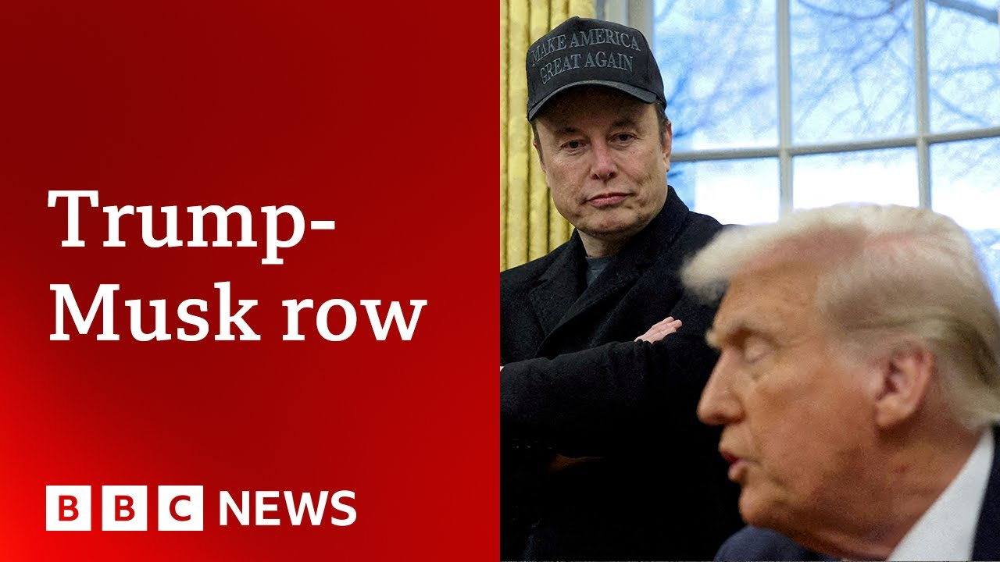

【特朗普无计划与埃隆·马斯克交谈，白宫表示 | BBC新闻】
Summary: The public feud between Donald Trump and Elon Musk escalated on social media, with the White House confirming no planned call between them, sparking speculation about its impact on Trump's political future and the global economy.
摘要： 特朗普与埃隆·马斯克的公开争执在社交媒体上升级，白宫证实双方无通话计划，引发对其政治前途及全球经济影响的猜测。

⏱️ Estimated Reading Time: 12 min
📚 高考3500生词 📚 雅思生词 📚 托福生词 📚 GRE生词 📚 UP主推荐生词
The very public feud between Donald Trump and Elon Musk exploded on social media yesterday with both men trading insults.
特朗普与埃隆·马斯克的公开争执昨日在社交媒体上爆发，双方互相辱骂。
Well, while a call might have been uh in prospect, the White House now reports that uh there are no plans for the US president to talk to Elon Musk today.
尽管此前可能有过通话的预期，但白宫现在表示，美国总统今日无计划与埃隆·马斯克交谈。
There had been some speculation of that, but the White House pushing back against that.
此前已有相关猜测，但白宫对此予以否认。
The wider question now is what this whole rift might mean for President Trump's political future direction and indeed the global economy.
更广泛的问题是，这一分歧对特朗普总统的政治未来方向乃至全球经济意味着什么。
Elon Musk has predicted a recession in the second half of this year thanks to President Trump's tariffs.
埃隆·马斯克预测，由于特朗普总统的关税政策，今年下半年将出现经济衰退。
And he's criticized one of President Trump's key domestic policies which the US president did not appreciate.
他还批评了特朗普总统的一项关键国内政策，而美国总统对此并不满意。
I'm very disappointed because Elon knew the inner workings of this bill better than almost anybody sitting here.
我非常失望，因为埃隆比在座几乎所有人都更了解该法案的内部运作。
Better than you people.
比你们这些人更了解。
He knew everything about it.
他对其了如指掌。
and he had no problem with it.
而他此前对此并无异议。
All of a sudden, he had a problem.
突然间，他却有了意见。
Well, that was Donald Trump speaking yesterday.
这是特朗普总统昨日的发言。
And just minutes later, Elon Musk replied on X, saying this was false and that the bill had never been shown to him.
几分钟后，埃隆·马斯克在X上回应称这是虚假的，且该法案从未向他展示过。
On Truth Social, President Trump then said Elon Musk was wearing thin, that he'd asked him to leave.
特朗普随后在Truth Social上表示，埃隆·马斯克令人厌烦，并要求他离开。
The president continued saying he'd taken away the EV mandate, that Mr. Musk had gone crazy.
总统还称他已取消电动汽车指令，并指责马斯克“疯了”。
Mr. Musk replied, calling this an obvious lie.
马斯克回应称这是明显的谎言。
Over the course of the day, the back and forth between the two men continued.
一整天的你来我往后，两人的争执仍在继续。
Elon Musk's father has told the BBC now that the row between his son and President Trump would fizzle out.
埃隆·马斯克的父亲向BBC表示，其子与特朗普总统的争执将逐渐平息。
Here's Errol Musk speaking to News Day.
以下是埃罗尔·马斯克接受News Day采访的内容。
What I see here is, you know, the field having been cleared of all the uh uh opposition, the uh it's the it's the bulls having their final round of seeing who's going to be the boss.
在我看来，这就像是清除了所有对手后，两头公牛在最后一轮较量中争夺领导权。
It's a standard procedure for the last several thousand years among the leaders of countries and um I it will fizzle out.
这是几千年来国家领导人之间的标准流程，最终会逐渐平息。
It blew up over Elon's idea that there should be no um form of uh payment to uh dem uh uh uh lawmakers in order to get their vote.
争执源于埃隆认为不应以任何形式向议员行贿以换取选票。
Uh they should not be bribed to be vote to get the vote and so forth.
他们不应被贿赂以获得投票支持。
So unfortunately, in order to get the votes that Trump needs to get the bill through, he has to have their votes.
遗憾的是，特朗普为让法案通过需要议员的投票支持。
So Elon is standing on principle and um it will fizzle out very soon.
埃隆坚持原则，但争执很快就会平息。
Well, a short time ago, I spoke to Laura Vice, a reporter for Punch Bowl News, and Peter Mauricei, economist and business professor at the University of Maryland and columnist for the Washington Times.
不久前，我采访了Punch Bowl News记者劳拉·维斯，以及马里兰大学经济学家、商业教授兼《华盛顿时报》专栏作家彼得·莫里西。
I started by asking Laura if she thought this rale would blow over.
我首先询问劳拉是否认为这场风波会过去。
So, I think it just underscores how quickly things can change in President Trump's orbit.
我认为这凸显了特朗普总统身边局势变化之快。
Um, Elon Musk was such a central part of the administration until his departure so recently.
埃隆·马斯克直到最近离职前都是政府的核心人物。
His work on Doge finding cuts and absolutely, you know, huge reductions to in the federal government.
他在联邦政府大幅削减开支方面的工作至关重要。
That's been a huge part of the narrative with the Trump administration and he's led that really vocally.
这是特朗普政府叙事的重要部分，而他曾大力推动。
Obviously, everything spilled out so publicly over the last, you know, 24, 48 hours, and, you know, now it absolutely could be settled, but that's yet to be seen.
显然，过去24到48小时内一切公开化，现在或许能解决，但尚待观察。
We'll kind of see how those conversations go.
我们将关注后续对话进展。
Um, but it was an absolutely huge kind of turn of favor, especially, you know, Republicans on Capitol Hill.
但这是一次巨大的态度转变，尤其是国会山的共和党人。
They've grown close to Musk as well and brought him in repeatedly.
他们与马斯克关系密切，并多次邀请他参与。
And so it would be an absolutely this sort of rift is a huge situation for Republicans.
因此，这种分歧对共和党而言是重大事件。
And um Pita Peter Mauricei, we saw in one of uh Elon Musk's posts yesterday him predicting a recession and he's been critical of the tariff policy which has had huge global impacts.
彼得·莫里西，我们看到马斯克昨日发帖预测衰退，并批评具有重大全球影响的关税政策。
Well, the tariffs as near as economists can calculate it will cause the economy to slow.
经济学家估算，关税将导致经济放缓。
But whether or not there'll be a recession is questionable.
但是否会出现衰退尚存疑问。
The macroeconomic consequences of this should be to cut the expected growth in the US economy this year in half, but for it not to contract.
其宏观经济影响应是将美国今年预期经济增长减半，但不会导致萎缩。
Now, those kinds of forecasts are, you know, iffy and Musk is going out on a limb saying things like that.
这类预测并不确定，而马斯克冒险发表此类言论。
Uh the reality is is that Musk is correct as his father said on the principles.
事实上，正如其父所言，马斯克在原则上是正确的。
the the the the uh the tax bill has a lot of pork in it as we say here and waste and it's ballooning the deficit to the point that bond markets internationally are very worried about US finances and so forth and the tariffs really are being conducted in an irrational fashion and he's quite exasperated by what he sees but he's used to getting his way and blustering around just the way Donald Trump is so you got two big bulls you know behaving badly u unfortunately for Mr. must uh Donald Trump's simply a more powerful man right now.
该税收法案包含大量浪费性支出，导致赤字膨胀至国际债券市场担忧美国财政的地步，且关税实施方式非理性。马斯克对此感到愤怒，但他习惯强硬行事，正如特朗普一样——两头公牛行为失控，遗憾的是目前特朗普权力更大。
And Laura, at the end of the day, that is that is the fact, isn't it? The US president is still the US president.
劳拉，归根结底，事实就是美国总统仍是美国总统。
Um, do you think his his policy on tariffs and his so-called big beautiful bill will change in any way as a result of Musk's departure from the administration?
你认为马斯克离开政府会改变特朗普的关税政策及所谓“宏伟法案”吗？
I don't think it's likely that those policies change because of Musk's, you know, criticism here or what he's kind of putting out there.
我认为这些政策不太可能因马斯克的批评而改变。
I mean, I think the risk with Musk talking about the deficit impact of this bill.
马斯克谈论该法案的赤字影响存在风险。
I think the bigger problem right now is you're seeing on Capitol Hill, um, this bill has tax cuts.
目前更大问题是国会山对该法案的态度——它包含减税。
It has immigration policies, uh, funding for border security, the sort of crackdowns that the administration is doing.
它包含移民政策、边境安全资金及政府的打击行动。
Um, and it also has massive spending cuts to federal spending.
还有联邦开支的大幅削减。
And so, you know, that's something where some of the conservative hardliners on Capitol Hill have wanted more federal spending cuts in this bill.
国会山部分保守强硬派希望该法案进一步削减联邦开支。
Um, if they start to get antsy with where the bill is at, that's really a bigger problem for President Trump as he's trying to get his agenda done very quickly here, the goal of getting it done by July 4th, which is coming up fast.
若他们对法案现状不满，将对特朗普快速推进议程（目标7月4日前通过）构成更大挑战。
Um, but, you know, I think Republicans response, I was on Capitol Hill yesterday talking to them.
但昨日我在国会山与共和党人交谈时，他们的反应是——
you know, this is the agenda and this is President Trump's party.
这是特朗普总统的议程，也是他的党派。
Um, none of that really was changing, but I think Republicans were disappointed to see this from Musk.
这些并未改变，但共和党人对马斯克的行为感到失望。
He's become a very influential figure in Republican politics.
他已成为共和党政治中极具影响力的人物。
He spent a lot of money to elect Trump and Republicans in Congress.
他为特朗普及国会共和党人投入大量资金。
And so, you know, they're not happy to see him fighting uh with Trump so directly certainly, but I don't think that it is going to tangibly change, for example, the bill that's working its way through Capitol Hill right now.
他们不愿看到他直接对抗特朗普，但这不太可能实质性影响当前国会审议的法案。
Peter Maurici, do you agree with that? Because obviously Musk also had people that he appointed within government.
彼得·莫里西，你同意吗？显然马斯克在政府中也有任命人选。
One wonders where those people will fit in in unrolling both sort of global and domestic, economic, and financial directions.
人们好奇这些人在推进国内外经济金融政策时将扮演何种角色。
Now the people that he has placed into the government are not in locations who are in positions where they'll have much influence on the things that we have been discussing namely the contents of the tax bill which do increase the deficit and so forth.
他安插在政府中的人并不在能影响税改法案（增加赤字等内容）的关键职位上。
The reality is that Musk's u influence is declining even before this blow up.
事实上，马斯克的影响力在此次冲突前已在下降。
Uh his money is only worth so much and if you give to a campaign you have a lot of influence at the time you're given.
他的资金影响力有限——竞选捐款仅在捐赠时有效。
Once the money's spent, it's spent.
资金一旦耗尽，影响力即消失。
Uh that he has indicated that he won't be contributing as much in the future and so forth.
他已表示未来不会大量捐款。
I don't expect that he's going to have much consequence uh on this bill and that uh he's going to have much influence.
我不认为他对此法案或未来政策会有多大影响。
This is kind of his swan
这像是他的告别——